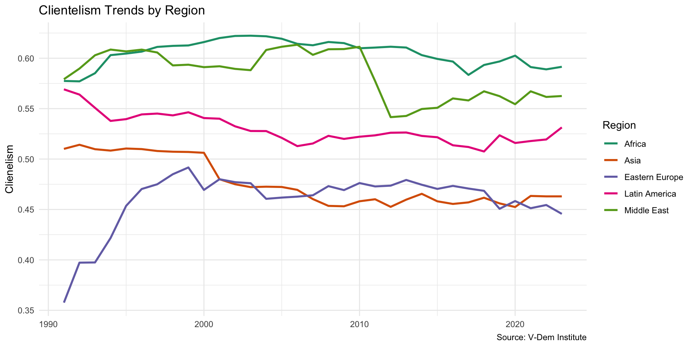

Lecture 5.1
Programmatic Politics vs. Clientelism
Emmanuel Teitelbaum
Development
What is Development?
- Economic Development: change in overall levels of wealth (growth)
- % increase in GDP or GDP per capita
- Human Development: change in overall levels of well-being
- Life expectancy
- Literacy
- Infant mortality
What is a “Developing Country?”
- World Bank Income Thresholds (GNI per capita, current US$)
- Low-income: $1,135 or less
- Lower middle-income: $1,136 - $4,495
- Upper middle-income: $4,496 - $13,935
- High income: > $13,935
- Countries that are still making rapid strides in terms of economic and human development
World Bank Income Classifications
Source: World Bank blog post
Other Approaches
Development as Freedom (Sen)
- Poverty is “capability deprivation”
- Governments promote development when they enhance capabilities, in turn promoting freedom
Participatory Development/Inclusive Growth
- Education and health care produce a more competitive labor force (human capital)
- Facilitates investment in industry
- Leads to broad-based “participatory” industrialization
Sustainable Development
- Minimizing impact on environment
- Avoiding depletion of natural resources
- Considering impact of development on future generations
Types of Distributive Politics
Distributive Politics
What is “Distributive Politics”?
- The politics of how public goods and services are distributed
- Key to human development
- Some countries do better than others
- AKA “the politics of public service provisioning”
Stokes et. al.–two main modes
- Programmatic
- Distribution criteria are public
- Criteria shape distribution of resources
- Nonprogrammatic
- Distribution criteria not made public, or distribution influenced by private, partisan criteria
Programmatic vs. Nonprogrammatic Distribution

Source: Stokes et. al. Brokers, Voters, and Clientelism
Discussion (Groups)
Stokes et. al. examples (each group take 1)
- Progressa/Oportunidades
- Emergency Food Aid, Argentina
- La Efectiva, Mexico
- Housing Improvement Program, Singapore
Questions
- What are characteristics of program in terms of:
- Criteria for distribution
- Linkages to electoral support
- Is the program “clientelist”?
- Is there anything like it in the U.S.?
Brokers
Who are brokers?
Problems with brokers
- Have their own agenda/ambitions
- Can do “misguided” or unexpected things
- misuse of party funds/gifts
- loyalty
- running thier own campaigns
- misuse of party funds/gifts
Examining Clientelism
Geography of Clientelism
Wealth and Clientelism
Changes Over Time
Discussion
- Are programmatic modes better for development than non-programmatic modes?
- Is one or the other more efficient?
- Is one or the other more ethical?
- Are brokers helpful or harmful from a developmental standpoint?
- In your opinion, why might countries eventually shift to programmatic modes?
Conclusion
Conclusion
- Development
- Economic, human
- Distributive politics
- Programmatic
- Nonprogrammatic
- Brokers
- Implications
- Clientelism declines with wealth
- But changes slow to occur